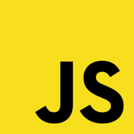

fiesta time photo booth full-stack website
Fiestatimephoto.com was a Full-stack design. I began from a sketch on paper to a custom WordPress theme using PHP and JavaScript. I went with a mobile-first approach and worked up to the desktop design. I integrated new CSS3 properties like flex-box module layout and the grid property as well. For WordPress, I utilized Customizer to improve the client experience so updating text and images on the site were easy. My focus was to have a clean design along with a way to tell a story for the user to help guide them along the journey to the CTA. The client was delighted and loved the outcome of their site.
Technologies
